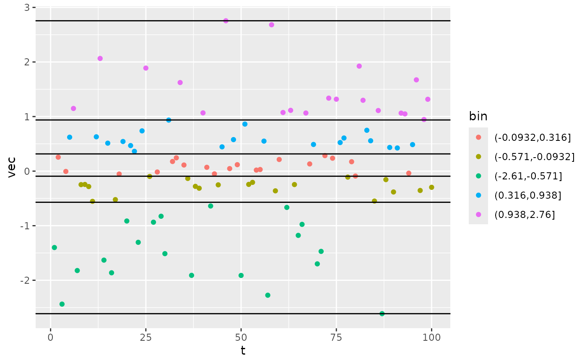
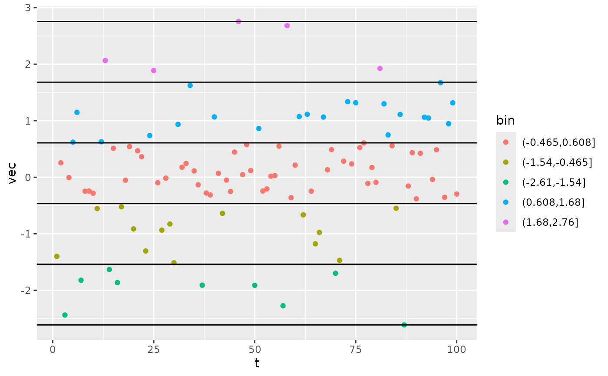
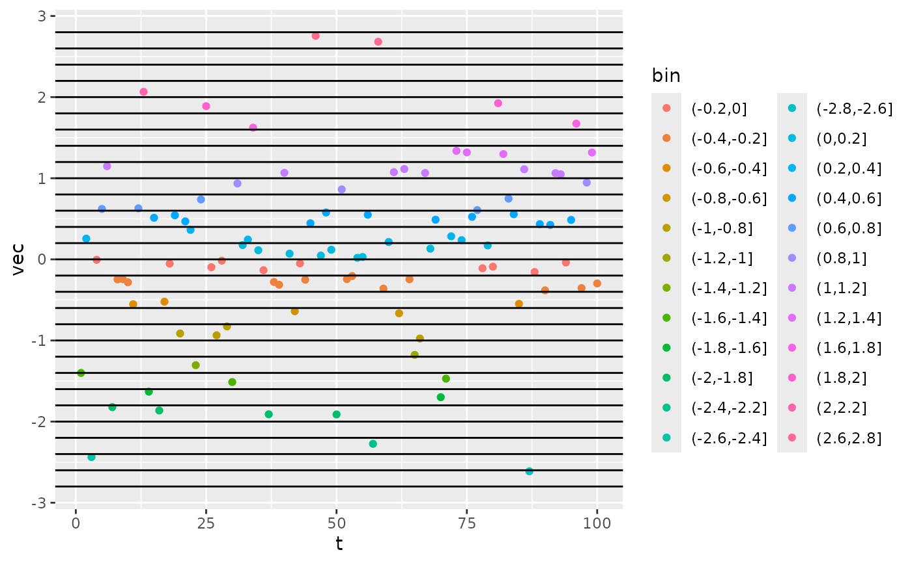
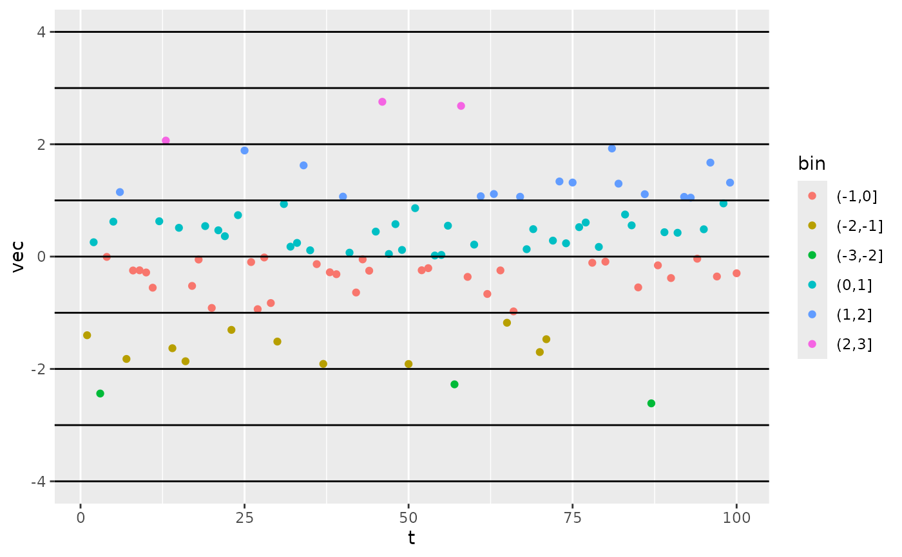

Assigns each value in vec a new, discrete value corresponding to a
bin. This function provides one interface to the functions
base::cut, ggplot2::cut_interval, and ggplot2::cut_number.
Usage
calc_bins(
vec,
method = c("bounds", "interval", "number", "width"),
...,
bounds
)Arguments
- vec
The numeric vector whose values should be binned. log(discharge.daily) is a good candidate when using this function for pooling of K600 values.
- method
A single character string indicating the automated bin selection method to use.
- ...
Other arguments (e.g.
n,width) passed to the ggplot function corresponding to the value of cuts, if cuts is a character (otherwise ignored).- bounds
If method=='bounds', a numeric vector of bin boundaries.
Value
A list containing the integer bin assignment for each value (vec),
the numeric bin boundaries (bounds), and the bin labels (names).
Examples
ln.disch <- log(rlnorm(100))
# for use in setting specs
brks <- calc_bins(ln.disch, 'width', width=0.8)$bounds
specs('b_Kb_oipi_tr_plrckm.stan', K600_lnQ_nodes_centers=brks)
#> Model specifications:
#> model_name b_Kb_oipi_tr_plrckm.stan
#> engine stan
#> split_dates FALSE
#> keep_mcmcs TRUE
#> keep_mcmc_data TRUE
#> day_start 4
#> day_end 28
#> day_tests full_day, even_timesteps, complete_data, pos_disch...
#> required_timestep NA
#> K600_lnQ_nodes_centers -2.8000000001, -2, -1.2, -0.4, 0.4, 1.2, 2, 2.8000...
#> GPP_daily_mu 3.1
#> GPP_daily_lower -Inf
#> GPP_daily_sigma 6
#> ER_daily_mu -7.1
#> ER_daily_upper Inf
#> ER_daily_sigma 7.1
#> K600_lnQ_nodediffs_sdlog 0.5
#> K600_lnQ_nodes_meanlog 2.484906649788, 2.484906649788, 2.484906649788, 2....
#> K600_lnQ_nodes_sdlog 1.32, 1.32, 1.32, 1.32, 1.32, 1.32, 1.32, 1.32
#> K600_daily_sigma_sigma 0.24
#> err_obs_iid_sigma_scale 0.03
#> err_proc_iid_sigma_scale 5
#> params_in GPP_daily_mu, GPP_daily_lower, GPP_daily_sigma, ER...
#> params_out GPP, ER, DO_R2, GPP_daily, ER_daily, K600_daily, K...
#> n_chains 4
#> n_cores 4
#> burnin_steps 500
#> saved_steps 500
#> thin_steps 1
#> stan_engine rstan
#> verbose FALSE
# variations
# by 'number' method
bins_num <- calc_bins(ln.disch, 'number', n=5)
df_num <- data.frame(t=1:length(ln.disch), vec=ln.disch, bin=bins_num$names[bins_num$vec])
table(bins_num$vec)
#>
#> 1 2 3 4 5
#> 20 20 20 20 20
# by 'interval' method
bins_int <- calc_bins(ln.disch, 'interval', n=5)
df_int <- data.frame(t=1:length(ln.disch), vec=ln.disch, bin=bins_int$names[bins_int$vec])
table(bins_int$vec)
#>
#> 1 2 3 4 5
#> 9 14 51 21 5
# by 'width' method
bins_wid <- calc_bins(ln.disch, 'width', width=0.2, boundary=0)
df_wid <- data.frame(t=1:length(ln.disch), vec=ln.disch, bin=bins_wid$names[bins_wid$vec])
table(bins_wid$vec)
#>
#> 1 2 3 5 6 7 8 9 10 11 12 13 14 15 16 17 18 19 20 21 23 24 25 28
#> 1 1 1 4 2 3 1 1 4 2 3 13 10 9 6 12 5 3 8 4 2 2 1 2
# choose your own arbitrary breaks
bins_arb <- calc_bins(ln.disch, bounds=seq(-4,4,by=1))
df_arb <- data.frame(t=1:length(ln.disch), vec=ln.disch, bin=bins_arb$names[bins_arb$vec])
table(bins_arb$vec)
#>
#> 2 3 4 5 6 7
#> 3 11 32 35 16 3
library(ggplot2)
ggplot(df_num, aes(x=t, y=vec, color=bin)) + geom_point() +
geom_hline(data=as.data.frame(bins_num['bounds']), aes(yintercept=bounds))

ggplot(df_int, aes(x=t, y=vec, color=bin)) + geom_point() +
geom_hline(data=as.data.frame(bins_int['bounds']), aes(yintercept=bounds))

ggplot(df_wid, aes(x=t, y=vec, color=bin)) + geom_point() +
geom_hline(data=as.data.frame(bins_wid['bounds']), aes(yintercept=bounds))

ggplot(df_arb, aes(x=t, y=vec, color=bin)) + geom_point() +
geom_hline(data=as.data.frame(bins_arb['bounds']), aes(yintercept=bounds))
